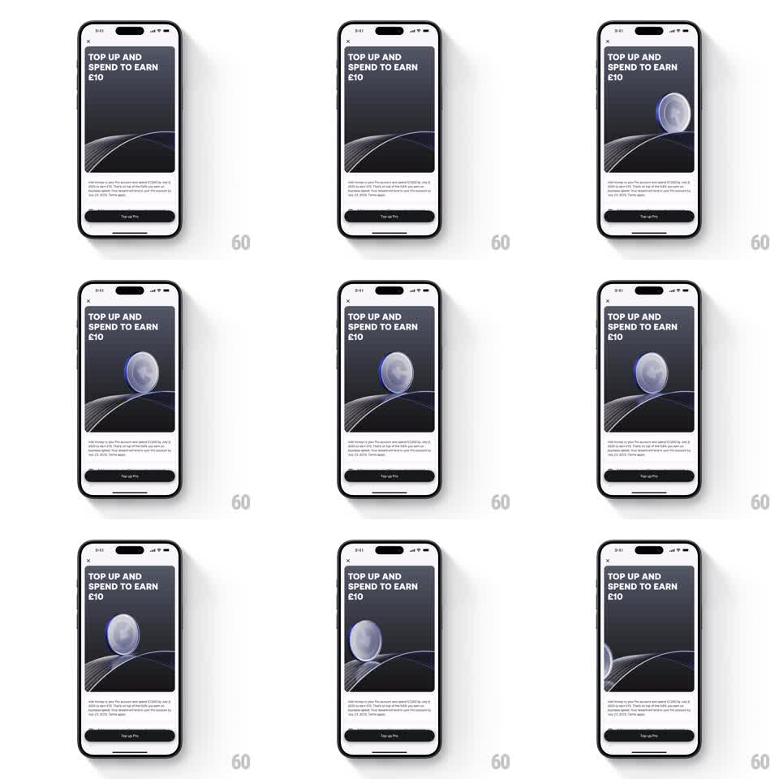

Media
Frame-by-frame

Rebuild this animation 1:1: a Revolut promo banner where a 3D metallic coin rolls along a curved neon path across a dark stage - the coin spins as it travels the wire-road, catching light, enters from the right and exits left on a seamless loop.

Rebuild this animation 1:1: a Revolut promo banner where a 3D metallic coin rolls along a curved neon path across a dark stage - the coin spins as it travels the wire-road, catching light, enters from the right and exits left on a seamless loop.
## Integration
Integration: stack-agnostic spec - springs given as stiffness/damping, timed motions as duration + curve; map every value to your framework and animation library of choice.
## Scene
Promo detail screen: dark card under the headline ("TOP UP AND SPEND TO EARN £10"), fine-print body, dark CTA. Inside the card: a dark stage with a thin glowing wire curve (neon blue-violet) sweeping across it like a road, and a silver 3D coin that rolls along the curve.
## Motion spec
Pattern: ambient loop, ~6s per pass.
- The coin enters from the right edge already rolling (rotation locked to travel: ~360deg per coin-circumference of path).
- It follows the wire curve's ups and downs (position on path + slight squash on the dips), rotation speed matching path velocity exactly.
- The wire glows brighter under the coin (a light pool that travels with it).
- Coin exits left; 1s pause; loop restarts.
- The card and copy never move.
## Calibration
- Rolling contact is everything: rotation must equal travel distance / circumference, or the coin slides and the illusion dies.
- The neon wire's traveling light pool sells the contact point.
## Reduced motion
Static coin resting on the wire's low point.
## Don't miss
- The coin is brushed metal - anisotropic highlights that shift as it rolls.
- Path easing: the coin slows slightly on rises, speeds on dips (physics feel, not constant speed).